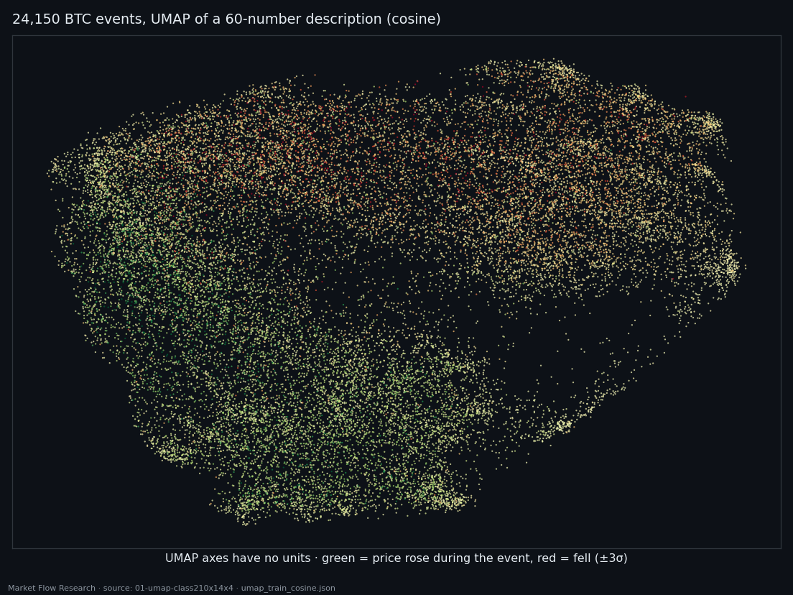
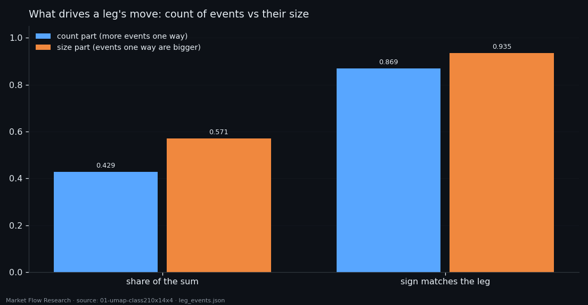
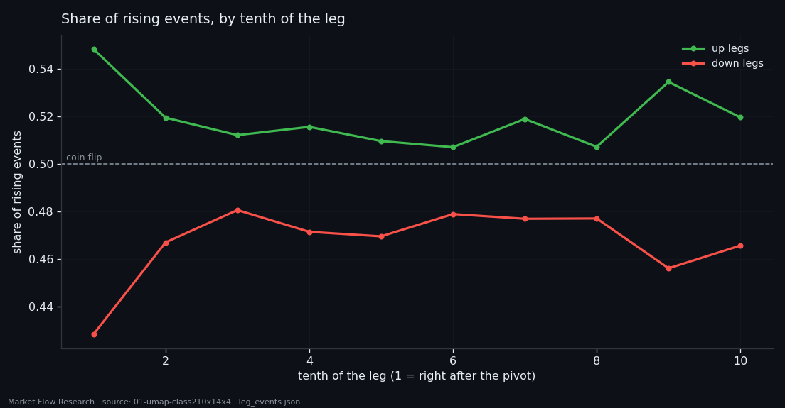
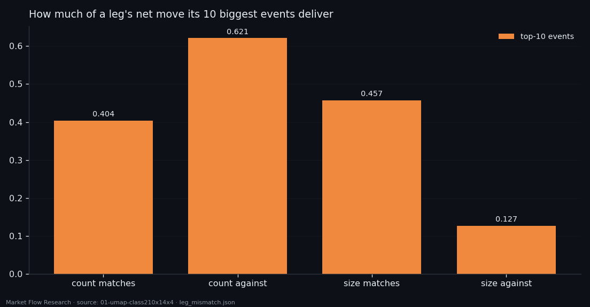

A Leg Is the Sum of Its Events — and Size Beats Count
In shortWe cut the price of six coins into 210-second events and into 2.3% zigzag legs, then asked the simplest question a direction model has to answer: how does a leg actually make its move? Over 712 legs and 409,998 events the answer is exact — the leg is the sum of its events (0.999 on clean legs) — and surprising: up legs are only 51.9% up-events. The move is carried by the size of events, not by how many point the right way.
Narrated walkthrough · plays from YouTube when you press play.
① The map before the labels
Every study in this series works on the same raw material: the Binance order book recorded every second — eight book features plus price — for six coins since February 2026. The unit of analysis is an event: 210 seconds of that stream, described by a class, a fixed recipe that compresses the window into a small matrix of numbers.
The first thing we did was look before labelling. We projected the BTC training set — 24,150 events from 14 February to 16 August 2026 — with UMAP, for every stored class of the dataset (from 3 to 90 numbers per event), each under three distance metrics, in 2D and in 3D. Sixty maps in total, all with the same seed (n_neighbors 30, min_dist 0.1), so they are directly comparable: the events are identical, only their description changes.
What the maps show: no islands. The events form one continuous cloud — there is no ready-made category waiting to be named. But colour each point by the price change during that same event and the cloud is not uniform: rising events gather on one side, falling ones on the other. That is a description, not a forecast — the numbers and the price change come from the same 210 seconds. Price change per event runs from −1.13% to +2.66% with σ = 0.123%, so a single event is a very small step. The real question is how those small steps add up into a move — which is where the rest of this article goes.

② A leg is exactly the sum of its events
The precise question was about legs: moves of at least 2.3% on a smoothed price (EMA-10 of event prices), between zigzag pivots. We used the full continuous series of all six coins — 712 legs (355 up, 357 down), 409,998 events, median 416 events per leg, median move 4.41%.
First, a sanity check that turned into a result. The move of a leg correlates with the sum of its events' moves at +0.949; the sign matches on 99.3% of legs, and on the 217 legs with no holes in the data the ratio is 0.999. A leg is not "made of" its events in some loose sense — it is their sum. Whatever tells a leg's direction must be visible in the events.
Then the useful part. The sum of event moves splits exactly into two terms in the same units: a count term (more events point the leg's way) and a size term (events pointing the leg's way are bigger). The size term carries 57% of the move and matches the leg's direction on 93.5% of legs; the count term carries 43% and matches on 86.9%. Correlation with the leg's move: +0.842 for size, +0.720 for count.

③ Why you cannot read direction from one event
Here is the number that explains why direction is hard. Inside an up leg, 51.9% of events are rising; inside a down leg, 46.7%. That is the entire count advantage — about five percentage points, accumulated over hundreds of events. It is the same on every coin: 0.514–0.525 in up legs, 0.458–0.479 in down legs.
The size effect is just as small per event and just as consistent. In an up leg, rising events average 0.1239% against 0.1059% for falling ones; in a down leg the mirror image, 0.1070% against 0.1236%. A skew of roughly 0.018% per event — tiny on one event, decisive over four hundred.
Where the edge is strongest tells you where to look: the first tenth of the leg, right after the pivot — 0.548 rising in up legs against 0.428 in down legs, a 12-point gap against about 4 points in the middle. After that the edge is flat to the end. Practical consequence for any label or model: measure the skew of event sizes over a window of tens of events, not the sign of the last event.

④ Legs that move against their own majority
If the edge is that thin, some legs must lack it. We took them apart.
87 legs (12.2%) made their move while having fewer events pointing their way. They are not glitches: they win on size, and they win in jumps. Their size skew is 0.193 against 0.111 for an ordinary leg, their ten biggest events deliver 62.1% of the net move (against 40.4%), and their top 10% of events deliver 106.3% — more than the whole move, meaning the other 90% of events pull backwards. They are also longer: 523 events median against 392.
46 legs (6.5%) had the count but not the size: events against the leg were bigger. These are the weakest legs — median move 2.96% against 4.53%, 272 events against 438 — built from many small steps, with the top ten events giving only 12.7% of the move.
Legs where both count and size go against the leg do not exist in the market. There are exactly three, and all three sit on holes in the data (median gap 59.4 hours). That is a data-quality filter, not a pattern. And in every group the move gathers at the edges of the leg — the first and last tenth — and least in the middle. The edges of a leg are where the next studies in this series go looking.

Reproduce this study
- Research log (.md, Ukrainian): goal, data, plan, scripts, every confirmed stage and table — enough to rerun the study
- Reproduction kit (.zip): the study's scripts, project rules and base scripts that build every class
All our bots have been tested live. The best one is Line 7.
More than a dozen bots were built from this research. Line 7 — two small transformers that read 160 hours of order book as one picture — is the only one ahead of buy & hold in live trading: +5.44% since 5 Oct while BTC moved −5.29%. Every trade is in the report.
Everything on this site is research, not financial advice.
How to read this site in 5 minutes · All studies as one .md for AI · All research
← All research